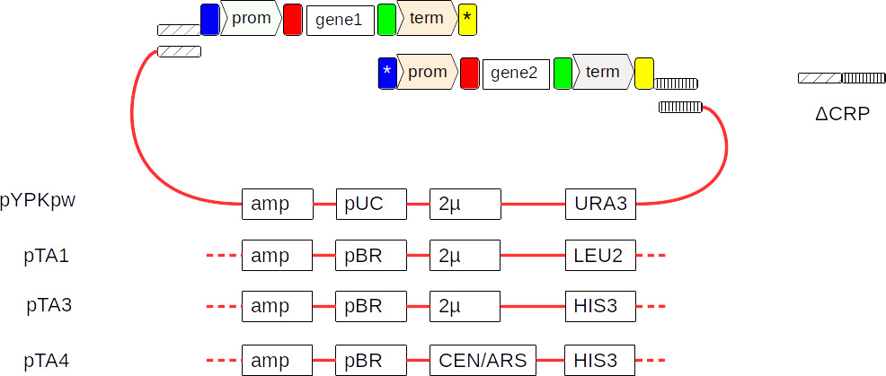
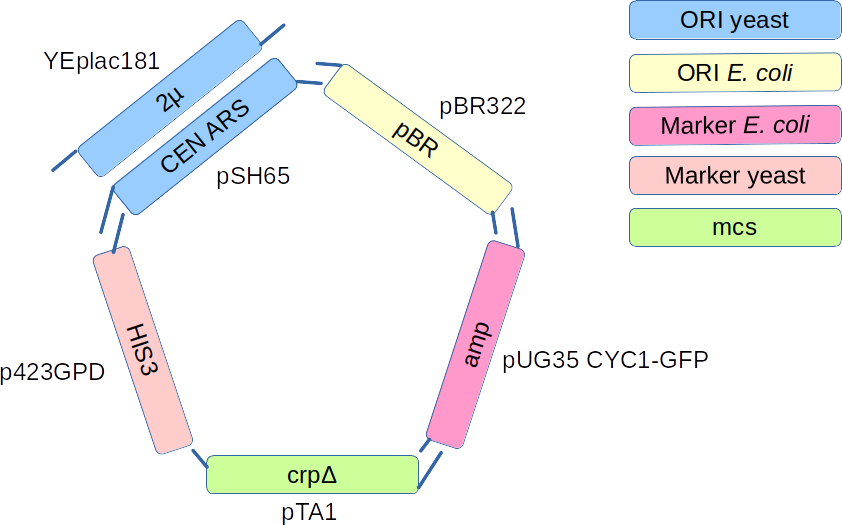

In-vivo assembly of pTA cloning vectors in Saccharomyces cerevisiae
The MEC group has developed a protocol for the assembly of reasonably large metabolic pathways in-vivo. This method is called the Yeast Pathway Kit.
In the last stages of pathway assembly, transcriptional units (promoter-gene-terminator) are assembled together by in-vivo homologous recombination.
The first and last gene cassette is recombined with a plasmid that has genes necessary for selection and maintenance of the pathway in yeast or E. coli.
In our original publication, a plasmid called pYPKpw was used. The pYPKpw had the following features:
- amp (ampicillin selection marker for E. coli)
- pUC (high copy number origin of replication for E. coli)
- 2µ (high copy number origin of replication for S. cerevisiae)
- URA3 (selection marker for for S. cerevisiae
- ΔCRP (a partial, inactive E. coli cyclic AMP receptor protein gene)
The CRP gene is inactive and only provide specific sequences for recombination.
The pTA1 plasmid was later made with a LEU2 selection marker.

It would be of interest to expand the range of plasmids for pathways, specifically:
- Having more selection marker for for S. cerevisiae would make it possible to combine several genes or pathways in the same cell.
- The 2µ ori gives a relatively high copy number of the vector. Having lower copy number would make it possible to fine tune gene expression
- The pUC origin of replication results in a high copy number of the vector in E. coli. This may lead to genetic instability in E. coli.
- Making vectors out of standardized parts would make it possible to make new vectors simply by exchanging one part.
primer design for pTA1
We chose to build the pTA1 plasmid from five genetic parts:

For the pTA1, five PCR products were made with PCR primers that incorporate flanking sequences (s1 - s5) on each PCR product. These flanking sequences can promote homologous recombination between the fragments.
| PCR product | Template | Left side | Right side |
|---|---|---|---|
| amp | pBR322 | s5 | s1 |
| pBR | pBR322 | s1 | s2 |
| LEU2 | YEplac181 | s2 | s3 |
| 2µ | YEplac112 | s3 | s4 |
| ΔCRP | pYPKpw | s4 | s5 |
The actual sequences of s1 - s5 were 30 bp sequences designed with the R2oDNA designer tool:
| Designation | Sequence |
|---|---|
| s1 | AATCCAATCAGCGTAAGGTGTAGACTTTCT |
| s2 | ATCGTATCTGCTGCGTAAATAGTAGTCAAC |
| s3 | TAAAATCTCGTAAAGGAACTGTCTGCTCTG |
| s4 | AACTGTAAAATCAGGTATCTCGTAGTCCGT |
| s5 | GAAAAGCGTTTACCTCGGAACTCTATTGTA |
The vector is assembled by homologous recombination between the s1-s5 sequences.
s1
-|amp|30
| \/
| /\ s2
| 30|pbr|30
| \/
| /\ s3
| 30|2µ|30
| \/
| /\ s4
| 30|leu|30
| \/
| /\ s5
| 30|ΔCRP|30
| \/
| /\
| 30-
| |
-------------------------------------
pTA3 and pTA4
Two new vectors are planned according to the table below:
| Name | ec_marker | ec_ori | sc_ori | sc_marker | rec |
|---|---|---|---|---|---|
| pTA3 | amp | pBR | 2µ | HIS3 | ΔCRP |
| pTA4 | amp | pBR | CEN/ARS | HIS3 | ΔCRP |
Most fragments are similar to the pTA1 except for new primers for the HIS3 marker and the CEN/ARS yeast origin of replication.
More details https://docs.google.com/spreadsheets/d/1QRW1G7DU0yBL3jH7aHovJDFphXHLjtalRAbq6ytUw2g/edit#gid=1150891082
Class 1 Thursday May 13
Students have two main tasks:
- each student will make a plasmid DNA preparation by the alkaline lysis method.
- each student will prepare two PCR reactions.
- each group will make an agarose gel for analysis of DNA.
Plasmid preparation
Follow this protocol: Plasmid preparation
Agarose gel electrophoresis of DNA
Each student should analyze their plasmid DNA using gel electrophoresis
- Unfreeze the plasmid DNA if this was not already done.
- Add 17 µL of water to an Eppendorf tube
- Add 5 µL 6xloading buffer LBx6.
- Add 8 µL plasmid DNA.
- If necessary, spin the tube for ~2 seconds to collect the liquid at the bottom.
- Put the gel in the electrophoresis chamber.
- Add buffer until the gel is just submerged.
- Add 10 µL of the mixture
- Apply the electrical field as soon as you are done.
- The electrophoresis last around 15 - 30 min at 100 volts in the Bio Rad Mini Sub Cell.
Post stain
- Put the gel in TAE + Midori, incubate 15-30 min
- Take picture
Dilution of plasmid DNA (x 500)
We need to dilute the plasmid in water in order to prepare a PCR reaction.
- Pipette 1 mL ultra-pure water into a fresh Eppendorf tube.
- Mark this tube well so that you can identify it.
- Vortex the tube with plasmid DNA so that you are sure that all DNA is dissolved.
- Transfer 2 µL of the plasmid DNA to the tube with 1 mL water This will make a 2µL/1000µL = x 500 dilution.
- Vortex the tube with the x 500 plasmid dilution so that the content is well mixed.
- Put the undiluted plasmid DNA in the -20°C freezer.
Preparation of a PCR reaction.
All PCR components need to be on ice at all times. Each student should prepare two PCR reactions. One reaction to amplify a plasmid part and one negative control. The difference between the amplification and control is that the control has a smaller volume and no template DNA. Each group has an ice box with each of the four ingredients for PCR. Pipette very carefully, there is only a limited amount of reagents.
Put two PCR tubes on ice to cool down. Add the reagents in the order given below.
PCR control (20 µL):
- 10 µL MM2 (green)
- 2 µL primer 1 (10 µM)
- 2 µL primer 2 (10 µM)
- 6 µL ultra-pure water
PCR amplification (40 µL):
- 20 µL MM2 (green)
- 4 µL primer 1 (10 µM)
- 4 µL primer 2 (10 µM)
- 12 µL diluted plasmid (x 500)
Keep all tubes on ice at all time.
The MM2 solution contain 2x concentrated PCR master mix and 6x concentrated DNA loading buffer. This mixture contain all components needed for PCR except primers and template. It also contain coloring and ficoll that makes it easier to load the sample on a gel for analysis. The coloring and ficoll are compatible with the PCR reaction. When you have prepared the tubes as described above, leave them on ice.
Material
2 dias antes da aula:
- LB com ampicilina (100 µg/mL) ~ 100 mL
- 5 erlenmeyers (100 mL) estéreis
No dia da aula:
-
Pipetas P1000, P100, P20 e P10
-
Espátulas para pesar agarose
-
4 caixas de esferovite para gelo
-
Tips amarelas (novos!)
-
Tips azuis (novos!)
-
12 tubos Eppendorf com 1 mL tampão P1 (marcados “P1”)
-
12 tubos Eppendorf com 1 mL tampão P2 (—”— “P2”)
-
12 tubos Eppendorf com 1 mL tampão P3 (—”— “P3”)
-
12 tubos com 1 mL TE x1
-
4 tubos Falcon 50 mL (usados)
-
4 suportes para tubos Eppendorf
-
4 suportes para tubos Falcon 50 mL
-
4 tubos Falcon 50 mL com 25-50 mL EtOH 96-100% (etanol absoluto para DNA/RNA)
-
4 tubos Falcon 50 mL com 25-50 mL EtOH 70% (v/v) (Feito com agua ultrapura)
-
4 copos com Tubos eppendorf 1.5 mL (novos, mas não necessariamente estéreis)
-
microcentrífuga
-
Agarose para géis
-
Tampão TAE x1
-
Tampão TAE stock
-
4 copos de 50-100 mL
-
1 proveta 50-100 mL
-
4 erlenmeyers 250 mL
-
2 tinas de eletroforese
-
Fonte de eletricidade
-
Barquinhos de pesagem (plástico)
Class 2 2021-05-20
This class has two main objectives:
- yeast transformation.
- agarose gel electrophoresis of PCR products.
Agarose gel electrophoresis of DNA
- Each student is assigned a PCR tube according to the matrix is the Google spreadsheet.
- Load the gel with 3 µL of the content of the PCR tube.
- Wait for the teacher to load the molecular weight marker.
- Apply the electrical field as soon as you are done.
- The electrophoresis last around 15 - 20 min at 100 volts in the Bio Rad Mini Sub Cell.
Preparation of DNA mix
- Add together the content of all PCR tubes with a number marked in bold in the Google spreadsheet.
- Give the tube to the teacher.
Yeast transformation
Each student should make one transformation and each group should make one control transformation. The control is specified in the google spreadsheet above.
- Transfer 1.5 mL ultra-pure water to an empty Eppendorf tube and put the tube on ice (cold water is needed later in the protocol)
- Put one 1.5 mL Eppendorf tube for each student on ice and one extra for the control transformation (eg. 4 tubes for a group with 3 members).
- Transfer 100 µL of the cell suspension to the tubes that you put on ice in the previous step. Keep the tubes on ice from now on when you are not pipetting.
- Spin the cells for 30 s at the highest speed.
- Remove supernatant with a P200 pipette. Leave the cell pellet at the bottom of the tube.
- Add 300 µL PLS to each cell pellet. This solution is viscous, so pipette slowly Keep tube on ice.
- Add 60 µL of the DNA mix or water (negative control) or the plasmid specified as positive control.
- To the control tube, add 60 µL of water or the specified positive control.
- Vortex the tubes until the cells are well mixed.
- Put the tubes in a floating tube rack at 42°C
- Incubate for 40 min.
- Remove tubes and put on ice for ~2 min.
- Add about 1/2 mL glass spheres to a to a Petri dish with the appropriate solid medium for selection (One plate per transformation).
- Spin tubes for 1 min at highest speed.
- Remove supernatant with a P1000 pipette. Leave the cell pellet at the bottom of the tube.
- Add 200 µL cold water (from the tube on ice, step 2) and resuspend with the pipette.
- Transfer 200 µL of the cell suspension to the Petri dish with the solid medium
- Spread the cells by shaking (The samba method!).
Post stain
- Put the gel in TAE + Midori, incubate 15-30 min
- Take picture
Material
- 40 placas petri com meio SD+URA
- banho 42°C
- 4 barcos para tubos eppendorf
- Pipetas P1000, P100, P20 e P10
- Pontas amarelas, azuis e brancas estéreis
- Tubos Eppendorf novos
- ~500 ml de TAE buffer 1x
- 2 sistemas de electroforese
- 4 caixas de esferovite para gelo
- esferas de vidro estereis ~5 mm (LGM)
- 4 * 100 mL Agua ultrapura estéril
- Espátula para pesar agarose
- Agarose
| Name | Sequence |
|---|---|
| 1352_HIS3fp_pTA | TAAAATCTCGTAAAGGAACTGTCTGCTCTGAACACAGTCCTTTCC |
| 1351_HIS3rp_pTA | ACGGACTACGAGATACCTGATTTTACAGTTTTTTTTCTCGAGTTCAAGA |
| 1350_KanMX4fp_pTA | TAAAATCTCGTAAAGGAACTGTCTGCTCTGGACATGGAGGCCC |
| 1349_KanMX4rp_pTA | ACGGACTACGAGATACCTGATTTTACAGTTCAGTATAGCGACCAGC |
| 1348_TRP1fp_pTA | TAAAATCTCGTAAAGGAACTGTCTGCTCTGTTTGCCGATTAAGAATTCG |
| 1347_TRP1rp_pTA | ACGGACTACGAGATACCTGATTTTACAGTTGATCTTTTATGCTTGCTTTTC |
| 1346_URA3fp_pTA | TAAAATCTCGTAAAGGAACTGTCTGCTCTGGATTCCGGTTTCTTTGAAA |
| 1345_URA3rp_pTA | ACGGACTACGAGATACCTGATTTTACAGTTGGTAATAACTGATATAATTAAATTGAA |
| 1344_CEN_ARSfp_pTA | ATCGTATCTGCTGCGTAAATAGTAGTCAACACGGATCGCTTGC |
| 1343_CEN_ARSrp_pTA | CAGAGCAGACAGTTCCTTTACGAGATTTTACTTTTCATCACGTGCTATA |
| 1113_Amp.fw.nw | GAAAAGCGTTTACCTCGGAACTCTATTGTAGAACCCCTATTTGTTTATTTTTCTA |
| 987_Amp.REV | AGAAAGTCTACACCTTACGCTGATTGGATTTGAAGTTTTAAATCAATCTAAA |
| 1195_Pbr.REV | GTTGACTACTATTTACGCAGCAGATACGATCTCGTTTCATCGGT |
| 1196_Pbr.FW | AATCCAATCAGCGTAAGGTGTAGACTTTCTCTGTCAGACCAAGTTTACT |
| 977_Crp.REV | TACAATAGAGTTCCGAGGTAAACGCTTTTCGTTCTTGTCTCATTGCC |
| 978_Crp.FW | AACTGTAAAATCAGGTATCTCGTAGTCCGTGTTCTGATCCTCGAGC |
| 983_Micron.REV | CAGAGCAGACAGTTCCTTTACGAGATTTTAGATCCAATATCAAAGGAA |
| 984_Micron.FW | ATCGTATCTGCTGCGTAAATAGTAGTCAACGATCGTACTTGTTACCCAT |
| 577_crp585-557 | gttctgatcctcgagcatcttaagaattc |